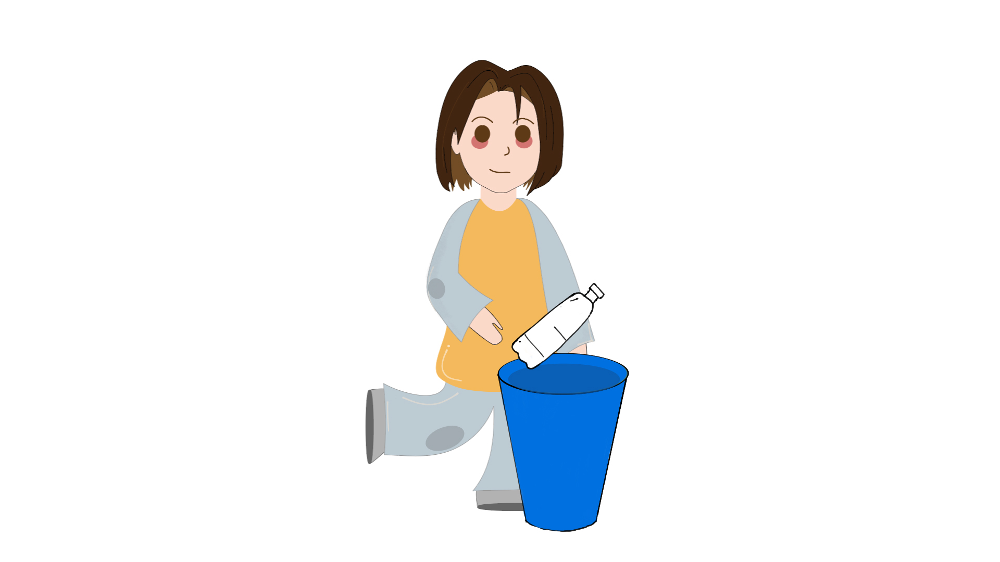

You threw it in the recycle!
When we throw items in the recycle, it goes to a clean material recovery facility. Clean MRFs process these recycable materials, and seperate them into various categories. These materials are then sent to recycling faicilties/composters, where these materials are reprocessed and reused to create new products.
Now what would happen if we would have thrown it in the trash? Continue to the next example.